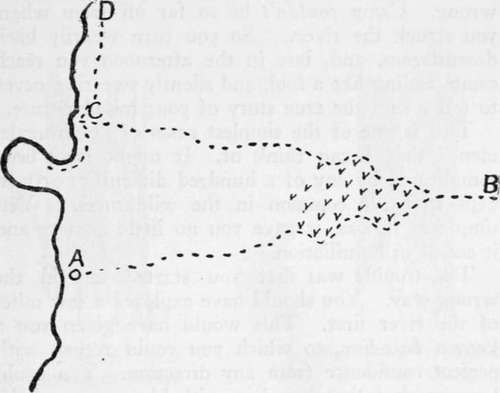

Chapter III. Pathfinding
Description
This section is from the book "Camping And Woodcraft", by Horace Kephart. Also available from Amazon: Camping and Woodcraft.
Chapter III. Pathfinding
I never knew a native of the wilderness who used a compass to guide him. The born backwoodsman relies upon the sun and stars, the direction of the wind, the courses of streams, prominent landmarks, and other natural signs of direction. That kind of pathfinding will be discussed later. It is essential in the education even of an amateur woodsman that he should learn to steer a course, over average ground and under ordinary conditions, without recourse to map or compass; for one can't be pottering over them when hunting or doing anything else of absorbing interest. Yet he should never be without them in the field; in emergencies they are simply invaluable.
On a windless, cloudy day, when boring through new country, especially if it be heavily timbered, it is quite too easy to lose one's bearings if the compass has been left behind. In thick fog or fast-falling snow, the best of men may go astray for lack of the faithful needle. Make it a rule, then, an iron rule, of wilderness life, never to leave your bed in the morning without compass, jackknife, and wraterproof matchbox filled (fill it, as a matter of habit, every time you wind your watch). A small section of map showing the principal features of the country round about is another mighty good thing to have always on your person, no matter how you may be dressed for the day or what you may be intending to do. There is no telling when you may be called off on the keen jump, nor whither you may have to go.
For instance: one time a big buck ran right through camp while we were cooking dinner; in the flurry, everybody grabbed some other fellow's gun, somebody wounded the beast, and there was a long chase without the least preparation in the world. Again, we were all out picketing the mountain for a bear drive; the bear avoided all the likely crossings and slipped by within fifty yards of camp. Now suppose you had been left there as camp-keeper for the day. You snatch up a gun, fire, find blood on the trail, follow it a couple of hours, and then— "where are you at?"
Aside from their value in emergencies, the compass and map are particularly useful to keep you out of trouble. The best advice in the world is "Don't get lost." The only way to make reasonably sure of that is to mind your P's and Q's (or rather your N and S) in advance. For example:
Base Lines
You have camped in a pleasant bit of flat-woods, on the margin of a stream, at A (Fig. 3). In the morning you decide to go out by yourself for a look-see, not hunting, of course, but just to get a good idea of the lay of the land. You know that the river runs north and south. Simplest thing in the world, then, to tramp eastward a couple of hours, and return in time for dinner. You can't cross that river without knowing it, and camp is right on the river bank, you know.
The forest is fairly open for the first mile or so and you steer an approximately straight course. Then you strike bogs and thickets, not bad ones nor big ones, but just enough to make you average your windings by glancing at the compass now and then. Presently the going is better, and you continue nearly straight east until you reach B, when it is time to return. You are sure that your course has been almost due east, and that you are about four miles from camp. You take compass bearings due west as far as you can see out, and back you. But you can't trail your own foot-prints. It would take one of Fenimore Cooper's redskins to do so over this firm ground covered with dry fallen leaves. No matter: you have a compass, haven't you?
Soon, at a point where your outbound course bore a bit northerly, you pass it, unknowingly, by going straight back west. You feel certain that you are steering right; for that compass is in your hand half the time.
Fig. 3. Need of Base line.
Hang it! here is a bog. To the left it looks impracticable. You go around to the right, and then carefully even up the winding by swerving left an equal distance. Some lesser curves hereafter are allowed for in the same way. Finally you come out on the river. You know your return course has been very nearly due west. But the confounded river doesn't look a bit like it did at camp! You struggle to the bank through thick undergrowth, and when you get there you can't see two hundred yards of the stream in either direction. There is a jungle to the water's edge.
Well, you are either above or below camp. But which? Maybe old Leatherstocking could tell; but you can't, to save your life. You might as well pitch a penny for it. At random you turn downstream. Very soon you come to an abrupt bend going westward. There was no indication of such a bend close to camp. Probably the tents are upstream, you say. So you turn about-face and go north. Still an utterly strange river.
By one o'clock you realize that you are going wrong. Camp couldn't be so far off from where you struck the river. So you turn wearily back downstream, and, late in the afternoon you reach camp, feeling like a fool, and silently swearing never to tell a soul the true story of your misadventure.
This is one of the simplest cases of "bumfuzzle-ment" that I can think of. It might have been complicated by any of a hundred difficulties or mis* haps that are common in the wilderness. Yet, simple as it was, it gave you no little anxiety and it ended in humiliation.
The trouble was that you started out in the wrong way. You should have explored a few miles of the river first. This would have given you a known base-line, to which you could return with perfect confidence from any direction. You could have marked that base-line with blazes every half-mile or thereabouts, on which were penciled the number of minutes' travel each location was from camp, the arrangement of blazes showing which way camp lay.
Where there is no river, road, or range of hills, running in a long continuous line to serve as base—. nothing, say, but trackless forest—the first thing to do is to run such a line by compass, spotting the trees, as will be described hereafter. I am assuming, here, that camp is to remain in one place for some time.
Continue to: